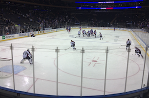

Coder Academy Term 1 finished! ans salmon pink is NICE.
6th October 2020

So...... little over 7 weeks ago, I started a fulltime, full-stack developer
course at CoderAcademy.com.au, three days ago
ago we handed in our third assessment. Not going to lie, its been tough. I went from
thinking I knew a bit of html, to building this site from scratch. Every line of code
is mine. It's not perfect by any means, but its mine. The sense of fullfilment from having
built my own little piece of the web is amazing. Not only that, but I just completed my
first fully functioning app. It only works in the terminal, and doesn't do very much tbh. However,
it does let me think that I can actually build more complex stuff. Actually, now I know I can.
We used ruby to make it, and yes I didn't know ruby at the start either. The joys of
being a mature student have made it challenging to manage my time, yet its only thanks to
COVID-19 that I can have started this course at all. Yes I lost my well paid job, but
its also allowed me to do something I've been wanting to do for a long time. I mean,
I started coding lessons before my lecturers were born. I learnt
LOGO at around 9yrs old.
The challenges for the coming term are going to be as big if not bigger... but I'm keen.
I haven't felt like this for a long long time.
PS. My 3 girls chose the colour scheme for the site. I had originally
made it a sky-blue theme since it refelcts who I am. I couldnt say no to the five year old who
wanted salmon-pink.
Back to the top
Blog Post 2
25 August 2020
But in certain circumstances and owing to the claims of duty or the obligations of business it will
frequently occur that pleasures have to be repudiated and annoyances accepted. The wise man therefore
always holds in these matters to this principle of selection: he rejects pleasures to secure other
greater pleasures, or else he endures pains to avoid worse pains.
Back to the top
Blog Post 3
24 August 2020
But in certain circumstances and owing to the claims of duty or the obligations of business it will
frequently occur that pleasures have to be repudiated and annoyances accepted. The wise man therefore
always holds in these matters to this principle of selection: he rejects pleasures to secure other
greater pleasures, or else he endures pains to avoid worse pains.
Back to the top
Blog Post 4
22 August 2020
But in certain circumstances and owing to the claims of duty or the obligations of business it will
frequently occur that pleasures have to be repudiated and annoyances accepted. The wise man therefore
always holds in these matters to this principle of selection: he rejects pleasures to secure other
greater pleasures, or else he endures pains to avoid worse pains.
Back to the top
Blog Post 5
21 August 2020
But in certain circumstances and owing to the claims of duty or the obligations of business it will
frequently occur that pleasures have to be repudiated and annoyances accepted. The wise man therefore
always holds in these matters to this principle of selection: he rejects pleasures to secure other
greater pleasures, or else he endures pains to avoid worse pains.
Back to the top